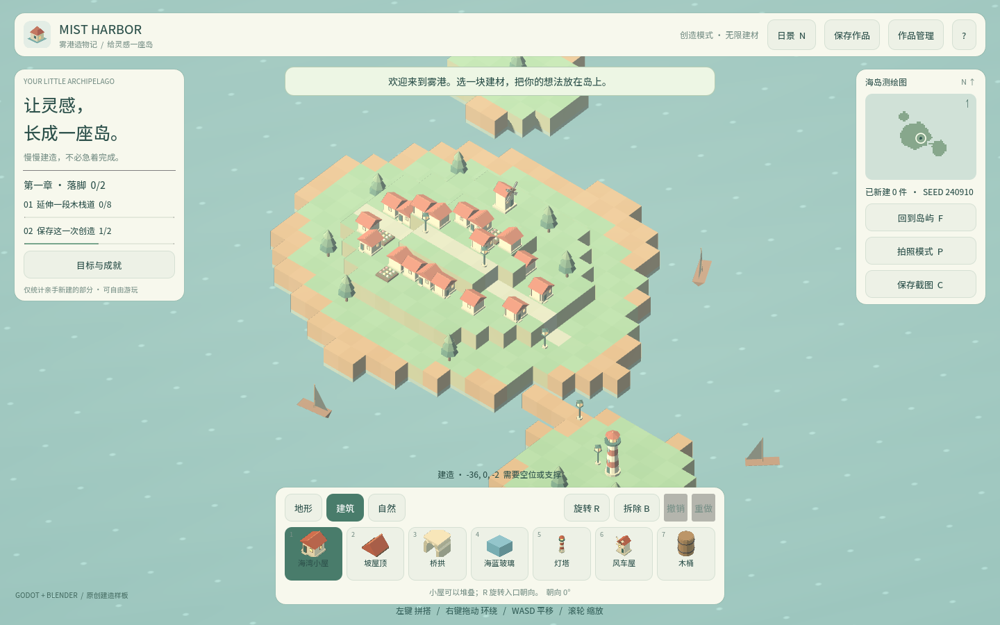
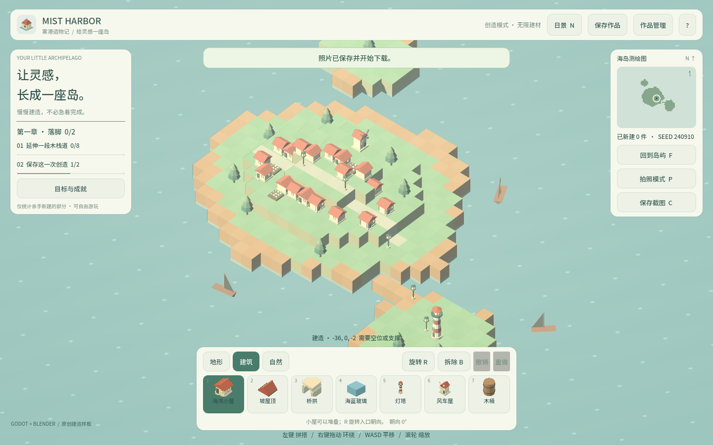

卷 6 · 第 30 章 浏览器验收：Playwright 与 harborState
本章目标：读懂
browser_smoke.py的 23 项是怎么写的——
为什么每个断言都要重试 8 秒、按钮坐标为什么要换算、
以及"刷新后世界还在"这一项为什么最值钱。
对应任务：T41（自动化 QA） | 对应文件：project/tests/browser_smoke.py
15.1 一句话概括这套验收
用真实 Chromium 打开 Web 导出，读游戏自己导出的状态 JSON，断言语义，而不是截图对比。
Playwright 启 Chromium
→ 打开 index.html
→ 等 window.harborState 出现
→ 点击 canvas / 按键盘 / 读快照断言
→ 收集 pageerror + console.error
→ 写产物 JSON（含 23 项 ok/fail）15.2 第一个关键点：断言要重试
def check(label, predicate):
deadline = time.monotonic() + 8
result = predicate() if callable(predicate) else bool(predicate)
while not result and callable(predicate) and time.monotonic() < deadline:
page.wait_for_timeout(150)
result = predicate()为什么？
- Web 平台写盘（IndexedDB）是异步的
- Godot 快照每 0.25 秒才更新一次（第 11 章）
- 渲染、导入、物理都有延迟
→ 立刻断言必然偶发失败（flaky）。8 秒 deadline + 150ms 轮询让测试稳定。
📌 这是自动化测试的第一条铁律：异步系统里，"再等等"不是妥协，是正确设计。
15.3 第二个关键点：按钮坐标要换算
快照里 buttons 存的是Godot UI 坐标系下的矩形，而 Playwright 点击用的是页面像素：
def click(key):
snap = state()
x, y, w, h = snap["buttons"][key] # Godot UI 坐标
rect = page.locator("canvas").bounding_box()
vw, vh = snap["viewport"] # 游戏视口尺寸
page.mouse.click(rect["x"] + (x + w/2) * rect["width"] / vw,
rect["y"] + (y + h/2) * rect["height"] / vh)| 好处 | 说明 |
|---|---|
| --- | --- |
| 分辨率无关 | 1440×900 还是平板视口，都能点中 |
| 布局变化不影响 | 按钮挪位置了，测试不用改 |
| 不需要图像识别 | 不用截图找按钮 |
📌 这正是第 11 章"导出按钮矩形"的回报：测试成本和 UI 布局解耦。
15.4 第三个关键点：等待"放置成功"而不是"点了"
for x, y in [(720,420), (660,480), (810,410), (740,520), (900,480)]:
page.mouse.click(x, y)
try:
page.wait_for_function("(n) => JSON.parse(window.harborState).placed > n", arg=before, timeout=6000)
placed = True
break
except PlaywrightTimeout:
print("No placement at", x, y, "pick=", state()["pick"])画布点击能否放下方块，取决于那一格有没有地面——所以脚本准备了 5 个候选点，
哪个成功用哪个，失败时把 pick 结果打出来便于诊断。
这是很实用的技巧：把"环境不确定性"显式写成重试列表，而不是写死一个坐标祈祷它永远有效。
15.5 第四：错误日志也是断言
page.on("pageerror", lambda e: logs.append(str(e)))
page.on("console", lambda m: logs.append(m.text) if m.type == "error" else None)
...
check("No browser or Godot errors", not logs)这一项的价值被严重低估：它能抓住"功能看起来正常、但控制台在报错"的问题——
比如资源加载失败、脚本告警、WebGL 回退警告。
15.6 第五：刷新后世界还在（最值钱的一项）
click("save") # 触发浏览器保存
check("Browser save acknowledged", lambda: state()["stats"]["saved"] == 1 and not state()["dirty"])
page.reload()
page.wait_for_function("!!window.harborState")
check("Refresh restores persisted world",
lambda: state()["placed"] == saved and state()["stats"]["saved"] == 1)它同时验证了：导出包完整、IndexedDB 可写、存档序列化/反序列化正确、
世界状态与统计一致、启动流程能重建世界。
📌 第 13 章那个"成就写盘顺序毁掉存档"的坑，就是靠这一类断言暴露的。
单测永远测不到它——因为它跨了"写盘顺序"和"平台异步"两件事。
15.7 产物：不只是一句话
测试会写出 project/.codebuddy/artifacts/browser/*.json：
{"checks": [{"label": "...", "ok": true}, ...], "logs": [...]}以及一张 mist-harbor-desktop.png 全页截图。
截图不是断言依据，而是人工复核材料——断言始终基于 JSON 状态。
🌩 在云端 agent（web-cb）里是什么样
| 🖥 本地路线 | 🌩 云端 agent（web-cb） | |
|---|---|---|
| --- | --- | --- |
| 浏览器 | 本地 Chromium（需装 Playwright） | 云端预览 + 平台自动化能力 |
| 依赖 | project/tests/requirements.txt | 同；云端镜像通常已预置 |
| 稳定性 | 本机 GPU/驱动影响渲染 | 云端 WebGL 环境统一 → 结果更可比 |
| 关键项 | 刷新持久化 | 云端必跑：IndexedDB 行为与本地文件不同 |
| 建议 | 发布前跑 | 云端可做定时回归，成本几乎为零 |
🌩 云端跑 L3 的另一个好处：学员的环境就是 Web，云端结论 = 学员真实体验。
15.8 常见坑速查（本章）
| 现象 | 原因 | 处理 |
|---|---|---|
| --- | --- | --- |
| 测试偶发失败（flaky） | 没等异步完成 | 用 check 的 8 秒重试 |
| 点不中按钮 | 忘了坐标换算 | 用 buttons 矩形按比例换算 |
| 放置偶尔失败 | 那个点没地面 | 多候选点 + 打印 pick |
| 控制台报错但功能正常 | 资源/脚本告警 | 靠 logs 断言抓住 |
| 刷新后世界没了 | 存档/写盘问题 | 检查写盘顺序（第 13 章） |
window.harborState 一直 undefined | QA 开关没开 / 还没初始化 | wait_for_function + 超时诊断 |
15.9 本章作业
- 解释
check()为什么要重试 8 秒，举出两个"异步来源" - 写出按钮坐标换算公式，并说明为什么它能做到分辨率无关
- 说出"刷新后世界还在"这一项同时覆盖了哪 5 件事
- 在
browser_smoke.py里加一项断言（例如"按 P 后 photos 增加"），跑一次确认通过
🎓 教学提示（给教师 / 直播主）
- 概念锚点：断言语义，不断言像素。截图是给人看的，JSON 是给机器看的。
- 课堂演示：把
check的 deadline 改成 0，现场看测试 flaky。 - 高频误解：学生想"截图对比"做验收。讨论：分辨率/字体/抗锯齿都会让它假失败。
- 讨论题：你项目里有没有"只有真浏览器才能测到"的东西？怎么把它变成回归用例？
- 批改要点：作业 3 要列出 ≥4 件事，只答"存档能用"不给满分。
🖼 本章图集


📹 录屏分镜（10 分钟）
| 时间 | 画面 | 解说词要点 |
|---|---|---|
| --- | --- | --- |
| 00:00–01:20 | 跑一次 browser_smoke.py，看 23 行 PASS | |
| 01:20–02:40 | check() 的 8 秒重试循环 | "异步世界里，等等不是妥协。" |
| 02:40–04:00 | 按钮坐标换算公式 | "布局变了，测试不用改。" |
| 04:00–05:20 | 5 个候选点的放置循环 | "环境不确定，就写成重试列表。" |
| 05:20–07:00 | 保存 → 刷新 → 世界还在 | "一项断言，覆盖五件事。" |
| 07:00–08:30 | logs 断言的价值 | |
| 08:30–10:00 | 作业 + 预告（断言演变史） |
🎬 本章视频
🖼 配图清单
| 文件名 | 内容 | 生成方式 |
|---|---|---|
| --- | --- | --- |
30-desktop-view.png | 桌面视口下的完整游戏画面 | python tools/course_capture.py --chapter 30 |
30-photo-toast.png | 按 C 保存截图后的提示（状态可断言） | 同上 |
🎥 直播脚本（L3 片段，12 分钟）
- 开场："你有没有被 flaky 测试折磨过？"——引出异步等待
- 演示：deadline=0 现场翻车，再改回来
- 互动：让观众想一个"只能靠浏览器测"的场景
- 收尾：预告断言演变史（那些我们写错的断言）
❓ 本章 FAQ
Q：23 项够吗？
A：对"发布门禁"够了。它覆盖的是端到端关键路径；细节规则由 L1 的 56 项负责。
Q：能不能并行跑加速？
A：可以分页面并行，但共享 IndexedDB 的"保存/刷新"用例必须串行——它依赖真实持久化。
Q：截图有什么用？
A：人工复核与教学素材；断言不依赖它。